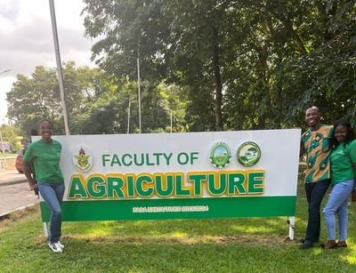
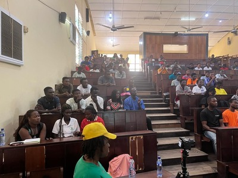

Case study 01
GIZ - Agribusiness Facility for Africa (ABF)
Partnered with GIZ to train university students and farmers on climate-resilient goat farming, agribusiness models, and value-chain opportunities, strengthening industry-academia collaboration and youth employability.
Partnership delivery
Agribusiness education
Climate resilience
View program update

